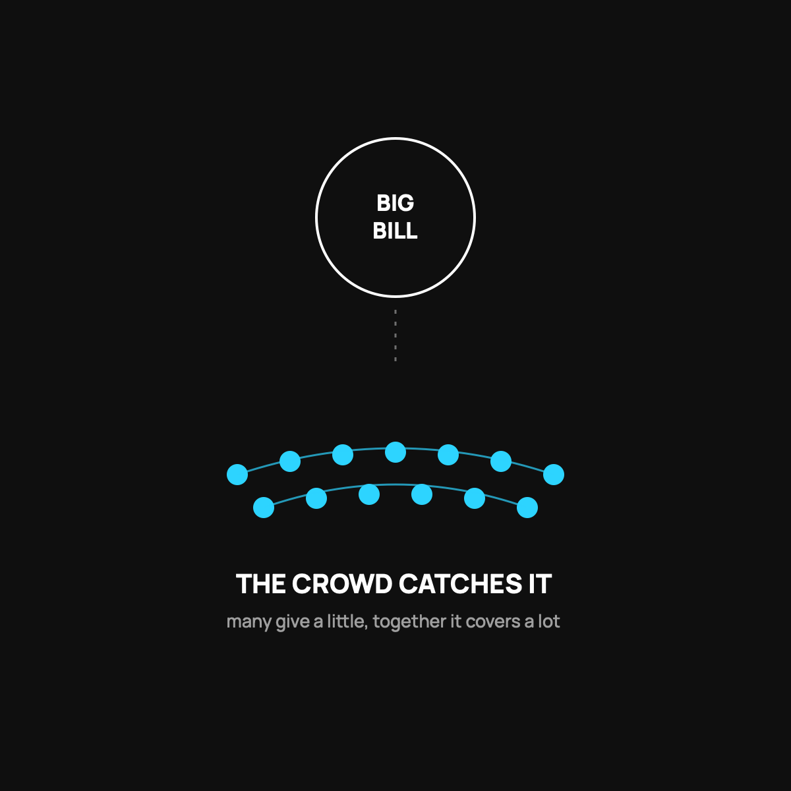

Can You Trust Health Sharing With a Big Bill?
A real track record, an honest look at the limits, and why the model isn't playing against you.
CrowdHealth's community has funded more than 45,000 bills, including a single bill over $643,000, and complete submissions get funded in about a week on average. It profits from a flat $60 fee, not from denying you. But it's not insurance and funding isn't legally guaranteed, so read the guidelines before you trust it with anything.

This is the question that stops most people. The monthly cost looks great, the idea sounds nice, and then your gut says the quiet part out loud: "But will it actually be there when I really need it?" That is the right question to ask. Here is the honest answer, with the parts that should reassure you and the parts that should keep you careful.
What "trust" should mean here
Trust is not a feeling. It is a track record plus a clear understanding of the rules. So let us look at both.
On the track record: CrowdHealth's community has funded more than 45,000 bills, with over 37,000 people signed up. The largest single bill the crowd has funded was more than $643,000 for a serious injury. Bills get fully funded in about a week on average once they are submitted, and members are reimbursed a couple of days after approval. On Trustpilot, it carries a 4.9 star rating across more than a thousand reviews. Those are not my numbers, they are theirs, and they are public so you can check them.
The part that should keep you careful
Now the honest half. Health sharing is not insurance. There is no legal contract promising a company will pay your claim. Instead, a community agrees to fund eligible bills, and it has done so reliably, but "reliably" is not the same as "guaranteed." Members are ultimately responsible for their own bills.
There are also real limits. Pre-existing conditions have waiting rules. Some things are simply not eligible, like most dental, vision, and cosmetic care. If you need an ironclad guarantee for an ongoing, expensive condition, this is not your tool. I laid out who should skip it entirely.
Why the model earns trust in the first place
Here is the thing that made me comfortable. Traditional insurance makes more money when it pays out less. That is the built-in conflict I wrote about. The people deciding whether to cover you profit when they do not.
Health sharing flips that. CrowdHealth makes its money on a flat $60 monthly fee, not a slice of your claims. So when their team negotiates your $40,000 bill down to $12,000, nobody at the company pockets the difference. Their incentive is to keep members happy so the community stays healthy, not to deny you. Think of it like a barn raising instead of a casino. The house is not playing against you.
How to test the trust yourself
Do not take my word or theirs. Read the member reviews on Trustpilot, both the glowing ones and the critical ones. The critical ones usually say a complex bill took longer than expected, not that it went unpaid. Then read the actual guidelines on what is eligible before you join, so there are no surprises. Trust that survives your skepticism is the only kind worth having.
The takeaway
Can you trust health sharing with a big bill? The community has a real, public track record of funding very large bills, fast, and the company profits by helping you, not denying you. But it is not insurance, it does not guarantee funding, and it has clear limits you need to read first. Go in with eyes open, and for a lot of people it is more trustworthy than the plan they have now, not less.
Questions I get about this
Has health sharing ever failed to pay a bill?
Bills do get declined, usually because they fell outside the written guidelines, like a pre-existing condition still in its waiting period or incomplete paperwork. The critical Trustpilot reviews mostly say a complex bill took longer than expected, not that it went unpaid. I cover the worst case in What If the Crowd Doesn't Fund Your Bill?.
How fast does CrowdHealth pay bills?
On average a complete submission is fully funded in about a week, and members are reimbursed a couple of days after approval. Incomplete paperwork is the usual cause of delays, so keep every piece of paper.
How can I check the track record myself?
Read the member reviews on Trustpilot, both glowing and critical. Then read the actual guidelines on what's eligible before you join. Trust that survives your skepticism is the only kind worth having.
If you want to look at the guidelines and see your own cost, use my code NORMAL: check out CrowdHealth (opens in a new tab). New members get their first 3 months at $99 a month with code NORMAL.
My family of four uses CrowdHealth and I really believe in the model. If you join through my discount link (opens in a new tab) (code NORMAL), you get your first 3 months at $99 a month, and Normaltown USA earns a referral bonus if you stick around. It costs you nothing extra, and I only refer you to things I would tell a friend about. Health sharing is not insurance, and nothing here is medical, tax, or financial advice.

Written by David Dewese
Normal guy with a full-time job, wife, and kids. Spent twenty years pursuing music and creative ventures before starting a family. Sharing tips and tricks on how to thrive while living on an artist's income. Not a financial advisor. More about me.
New here?
Normaltown USA is plain-English money and healthcare help for normal people, written by a regular guy with a family of four. No jargon, no hype. Start here, or read the FAQ.